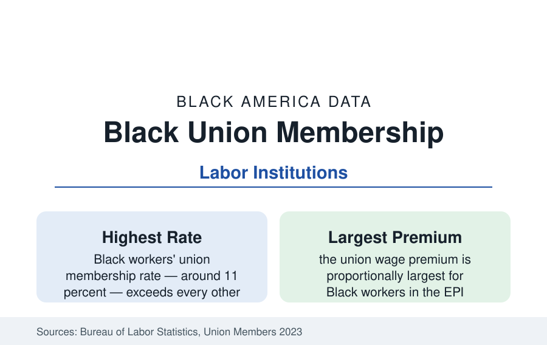

Black Employment
Black Union Membership: The Highest Rate in the Labor Force
Black workers are the most unionized group in America — about 11 percent are union members — and the union wage premium is largest for them. The BLS data.

Black workers are the most unionized workers in America. The Bureau of Labor Statistics' annual union release has recorded the fact for decades: Black union membership rates run around eleven percent of employed Black workers — above White workers' roughly ten, above the overall rate — in a labor movement whose total density has fallen by more than half since the early 1980s. Union membership is also worth more to Black workers than to any other group in the wage data. This article reports the union file.
Where the Members Are
The membership's geography is the public-sector profile's mirror: a majority of Black union members work in the public sector or public-adjacent services — teachers and school staff (the education unions), transit and sanitation (the municipal unions), postal workers (the USPS unions are among the most heavily Black in the federation — the postal service's workforce legacy), health care (the hospital and homecare unions, whose homecare organizing built the largest recent membership gains), and protective services. The private-sector remnant is concentrated in the industries this section has profiled: auto and steel's surviving locals, the building trades unions (at the construction file's thin shares), grocery and meatpacking (the UFCW's locals, a heavily Black and immigrant membership), hospitality in the union-hotel cities, and logistics' beachheads. The Southern data are the map's standing exception — right-to-work regimes and the region's labor law keep Southern Black density the nation's lowest despite the workforce's size, the geography Operation Dixie's failure set in the 1940s.
The Premium: What Membership Pays
The wage analyses are the file's argument in numbers. The union premium — members' hourly earnings advantage over comparable non-members — runs in the range of ten to twenty percent overall in the EPI and academic series and proportionally largest for Black workers (and for Black women within it), alongside the non-wage ledger the premium studies count: employer health coverage rates, retirement plan coverage (the defined-benefit pension's survival is substantially a union-sector fact — the pension wealth of the wealth profile's middle), paid leave, and the due-process protections whose value the scheduling and discipline data imply. The compression effect is the aggregate consequence: union wage scales compress racial gaps within workplaces (the standardized pay of the contract), so Black workers in union settings record earnings gaps versus White co-workers materially smaller than the economy-wide gaps in the same industries — the institution functioning, in the data, as a gap-closing machine wherever it survives.
The Institutions: Black Labor's Own Houses
Black labor's institutional history is a data thread of its own: the Brotherhood of Sleeping Car Porters (1925, A. Philip Randolph — the first Black-led union chartered by the AFL, its porters the postal-adjacent aristocracy of the old economy), the Negro American Labor Council, the Coalition of Black Trade Unionists (founded 1972, the Black labor movement's standing federation-within-the-federation), and the A. Philip Randolph Institute. The leadership data show the movement's current composition: the AFL-CIO's and the big internationals' elected leadership includes Black presidents of major unions in numbers unthinkable in the federation's first century — alongside local-leadership shares that track the membership. The public-sector unions of the teachers' and AFSCME traditions are, by membership, among the largest Black civic organizations in America — a fact the civic data register alongside churches and the Divine Nine.
The Trend and the Current Organizing Wave
The trend line is the national one with a Black accent: density fell from above twenty percent in the early 1980s (Black density then approached a quarter of the workforce) to today's ~11, the public-sector share rising as the private collapsed — with the Janus decision's public-sector agency-fee ruling registering in the membership data as a smaller shock than forecast. The current organizing data carry the era's novelties: the Southern auto campaigns, the Starbucks and Amazon drives (whose visible leadership and shop-floor majorities in several landmark facilities were heavily Black — the Bessemer, Alabama warehouse campaign, in one of the nation's Blackest metro workforces, became the era's symbol), the graduate-worker and museum-and-media waves, and the homecare and childcare organizing that follows the care economy's workforce. The NLRB petition data record filing volume at recent highs; the win rates and first-contract data decide whether the wave becomes density.
Reading the Union Data
The union file explains a standing puzzle in the employment data — how a mid-twentieth-century institution still registers in every wage table — with a simple mechanism: the premium is largest for Black workers, so Black workers kept the faith longest. Eleven percent of the workforce holds the contracts that compress the gaps the rest of the section measures; the distance between the union economy's numbers and the open-shop economy's is the most concrete price tag in this reference on what an institution is worth.
More in Black Employment
The Black Unemployment Rate: The Two-to-One Pattern
Black unemployment runs at roughly twice the White rate — 5.5 percent against 3.3 percent in annual averages — a ratio stable across five decades of federal data. How it is measured and why it persists.
Black Median Weekly Earnings: The 80-Cent Ratio
Black full-time workers earn a median of about $900 a week — roughly 80 cents for every dollar White workers earn. The BLS earnings data by group, gender, and occupation.
Black Labor Force Participation: Working at National Rates
Black labor force participation runs at roughly the national rate — and Black women participate at higher rates than White women. The BLS participation data.
Source: U.S. Bureau of Labor Statistics, Union Members annual release and Current Population Survey; Economic Policy Institute union premium research; AFL-CIO and Labor Council for Latin American Advancement-equivalent Black labor institutions data.